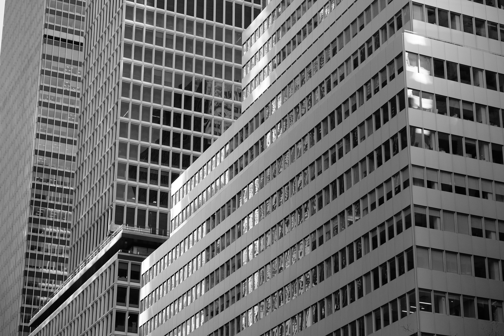

Main content
My work explores the relationship between the body and unwanted gifts. With influences as diverse as Blake and Frida Kahlo, new tensions are distilled from both mundane and transcendant discourse. Ever since I was a student I have been fascinated by the endless oscillation of relationships. What starts out as contemplation soon becomes corrupted into a cacophony of lust, leaving only a sense of nihilism and the chance of a new understanding. As temporal derivatives become clarified through boundaried and diverse practice, the viewer is left with an epitaph for the outposts of our world.